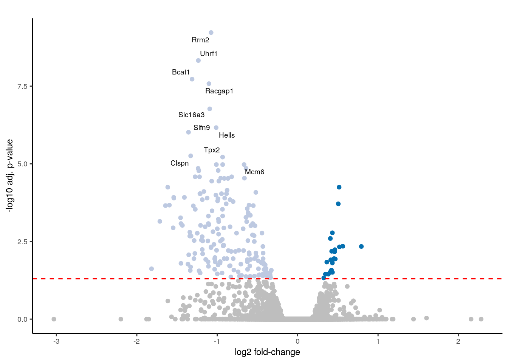
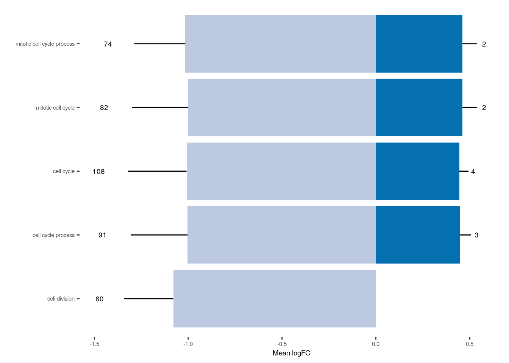
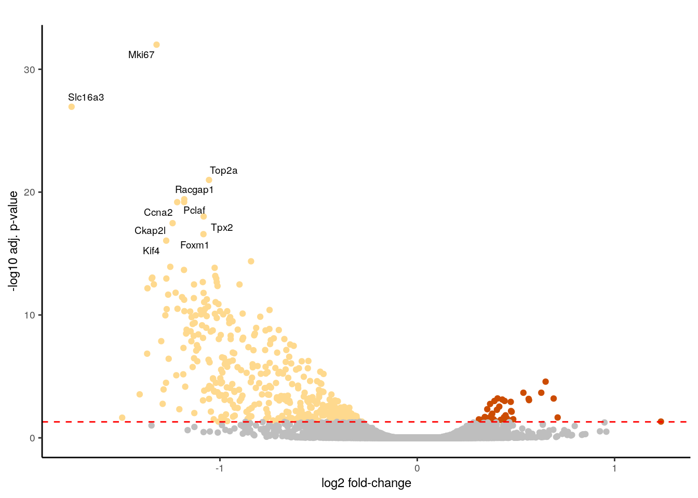
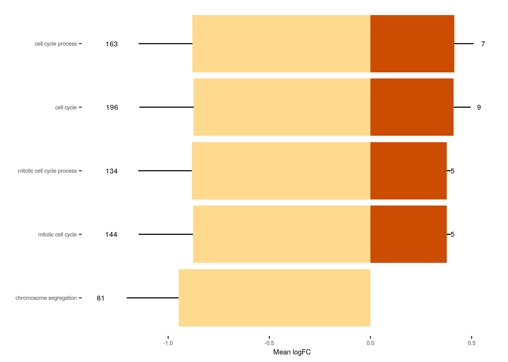

Last updated: 2025-09-02
Checks: 5 2
Knit directory: invitro/
This reproducible R Markdown analysis was created with workflowr (version 1.7.1). The Checks tab describes the reproducibility checks that were applied when the results were created. The Past versions tab lists the development history.
The R Markdown is untracked by Git. To know which version of the R Markdown file created these results, you’ll want to first commit it to the Git repo. If you’re still working on the analysis, you can ignore this warning. When you’re finished, you can run wflow_publish to commit the R Markdown file and build the HTML.
Great job! The global environment was empty. Objects defined in the global environment can affect the analysis in your R Markdown file in unknown ways. For reproduciblity it’s best to always run the code in an empty environment.
The command set.seed(20250827) was run prior to running the code in the R Markdown file. Setting a seed ensures that any results that rely on randomness, e.g. subsampling or permutations, are reproducible.
Great job! Recording the operating system, R version, and package versions is critical for reproducibility.
Nice! There were no cached chunks for this analysis, so you can be confident that you successfully produced the results during this run.
Using absolute paths to the files within your workflowr project makes it difficult for you and others to run your code on a different machine. Change the absolute path(s) below to the suggested relative path(s) to make your code more reproducible.
| absolute | relative |
|---|---|
| /workspaces/invitro/invitro/data/ | data |
Great! You are using Git for version control. Tracking code development and connecting the code version to the results is critical for reproducibility.
The results in this page were generated with repository version f813be8. See the Past versions tab to see a history of the changes made to the R Markdown and HTML files.
Note that you need to be careful to ensure that all relevant files for the analysis have been committed to Git prior to generating the results (you can use wflow_publish or wflow_git_commit). workflowr only checks the R Markdown file, but you know if there are other scripts or data files that it depends on. Below is the status of the Git repository when the results were generated:
Untracked files:
Untracked: analysis/at1_at2.rmd
Untracked: code/cell_cycle.r
Untracked: code/common_genes.r
Untracked: code/deg_plots.r
Untracked: code/single_cell.r
Untracked: code/unique_genes.r
Untracked: data/220427_ATII_embedding.rds
Untracked: data/220427_EC_embedding.rds
Untracked: data/220427_MFB_embedding.rds
Untracked: data/Count.matrix.xls
Untracked: data/G1S.txt
Untracked: data/G2M.txt
Untracked: data/Hyperoxia_AT.xls
Untracked: data/Hyperoxia_EC.xls
Untracked: data/Hyperoxia_MFB.xls
Untracked: data/bulk_seurat_endothelial.rds
Untracked: data/bulk_seurat_epithelial.rds
Untracked: data/bulk_seurat_stroma.rds
Untracked: data/inVivo_hyperoxia.xlsx
Untracked: data/samplesheet.txt
Untracked: et(frame,nsets = 20, nintersects = 15,
Unstaged changes:
Modified: README.md
Modified: _workflowr.yml
Modified: data/README.md
Modified: invitro.Rproj
Note that any generated files, e.g. HTML, png, CSS, etc., are not included in this status report because it is ok for generated content to have uncommitted changes.
There are no past versions. Publish this analysis with wflow_publish() to start tracking its development.
data.folder <- "/workspaces/invitro/invitro/data/"
meta <- read.delim(paste0(data.folder,"samplesheet.txt"), sep = "\t", stringsAsFactors = F, header = T, check.names=F)
meta$SampleName <- gsub('-', '_', meta$SampleName)
rownames(meta) <- meta$SampleName
meta$Experiment = 'Lung'
meta$Experiment[meta$Treatment %in% c('C', 'S')] = 'Stretch'
meta$Experiment[meta$Treatment %in% c('N', 'H')] = 'Hyperoxia'
meta$Experiment[meta$Organism == "inVivo"] = 'inVivo'
meta = meta[order(meta$Organism, meta$Experiment, meta$Sample, meta$Treatment),]
meta$Batch = factor(meta$Batch)
meta$Organism[meta$Organism == "AT"] <- 'ATll'
meta$Organism[meta$SampleName == "N_AT_07"] <- "ATl"
meta$Organism[meta$SampleName == "H_AT_07"] <- "ATl"
meta$Organism[meta$SampleName == "N_AT_13"] <- "ATl"
meta$Organism[meta$SampleName == "H_AT_13"] <- "ATl"
meta$Organism = factor(meta$Organism)
meta$Sample = factor(meta$Sample)
meta$Sample.n = factor((do.call(c, sapply(rle(meta$Experiment)$lengths, seq)) + 1) %/% 2)
meta$Treatment <- factor(meta$Treatment)
levels(meta$Treatment) <- list(Control='C', Stretch='S', Normoxia='N', Hyperoxia='H', Ventilation='V')
count <- read.table(paste0(data.folder,"Count.matrix.xls"), sep = "\t", header = T, stringsAsFactors = F, row.names = 1)
colnames(count) <- gsub('\\.', '_', colnames(count))knitr::kable(meta[,c('Sample', 'Organism', 'Treatment', 'Experiment', 'Sample.n')])| Sample | Organism | Treatment | Experiment | Sample.n | |
|---|---|---|---|---|---|
| H_AT_07 | 7 | ATl | Hyperoxia | Hyperoxia | 1 |
| N_AT_07 | 7 | ATl | Normoxia | Hyperoxia | 1 |
| H_AT_12 | 12 | ATll | Hyperoxia | Hyperoxia | 2 |
| N_AT_12 | 12 | ATll | Normoxia | Hyperoxia | 2 |
| H_AT_13 | 13 | ATl | Hyperoxia | Hyperoxia | 3 |
| N_AT_13 | 13 | ATl | Normoxia | Hyperoxia | 3 |
| H_AT_17 | 17 | ATll | Hyperoxia | Hyperoxia | 4 |
| N_AT_17 | 17 | ATll | Normoxia | Hyperoxia | 4 |
| C_AT_05 | 5 | ATll | Control | Stretch | 1 |
| S_AT_05 | 5 | ATll | Stretch | Stretch | 1 |
| C_AT_07 | 7 | ATll | Control | Stretch | 2 |
| S_AT_07 | 7 | ATll | Stretch | Stretch | 2 |
| C_AT_12 | 12 | ATll | Control | Stretch | 3 |
| S_AT_12 | 12 | ATll | Stretch | Stretch | 3 |
| C_AT_21 | 21 | ATll | Control | Stretch | 4 |
| S_AT_21 | 21 | ATll | Stretch | Stretch | 4 |
| H_EC_04 | 4 | EC | Hyperoxia | Hyperoxia | 1 |
| N_EC_04 | 4 | EC | Normoxia | Hyperoxia | 1 |
| H_EC_23 | 23 | EC | Hyperoxia | Hyperoxia | 2 |
| N_EC_23 | 23 | EC | Normoxia | Hyperoxia | 2 |
| H_EC_24 | 24 | EC | Hyperoxia | Hyperoxia | 3 |
| N_EC_24 | 24 | EC | Normoxia | Hyperoxia | 3 |
| C_EC_20 | 20 | EC | Control | Stretch | 1 |
| S_EC_20 | 20 | EC | Stretch | Stretch | 1 |
| C_EC_24 | 24 | EC | Control | Stretch | 2 |
| S_EC_24 | 24 | EC | Stretch | Stretch | 2 |
| C_EC_28 | 28 | EC | Control | Stretch | 3 |
| S_EC_28 | 28 | EC | Stretch | Stretch | 3 |
| L_13_279 | 279 | inVivo | Ventilation | inVivo | 1 |
| L_13_283 | 283 | inVivo | Ventilation | inVivo | 1 |
| L_13_287 | 287 | inVivo | Control | inVivo | 2 |
| L_13_289 | 289 | inVivo | Control | inVivo | 2 |
| L_13_298 | 298 | inVivo | Hyperoxia | inVivo | 3 |
| L_14_315 | 315 | inVivo | Ventilation | inVivo | 3 |
| L_14_319 | 319 | inVivo | Control | inVivo | 4 |
| L_14_428 | 428 | inVivo | Hyperoxia | inVivo | 4 |
| L_14_431 | 431 | inVivo | Hyperoxia | inVivo | 5 |
| H_MFB_04 | 4 | MFB | Hyperoxia | Hyperoxia | 1 |
| N_MFB_04 | 4 | MFB | Normoxia | Hyperoxia | 1 |
| H_MFB_20 | 20 | MFB | Hyperoxia | Hyperoxia | 2 |
| N_MFB_20 | 20 | MFB | Normoxia | Hyperoxia | 2 |
| H_MFB_24 | 24 | MFB | Hyperoxia | Hyperoxia | 3 |
| N_MFB_24 | 24 | MFB | Normoxia | Hyperoxia | 3 |
| H_MFB_27 | 27 | MFB | Hyperoxia | Hyperoxia | 4 |
| N_MFB_27 | 27 | MFB | Normoxia | Hyperoxia | 4 |
| C_MFB_01 | 1 | MFB | Control | Stretch | 1 |
| S_MFB_01 | 1 | MFB | Stretch | Stretch | 1 |
| C_MFB_04 | 4 | MFB | Control | Stretch | 2 |
| S_MFB_04 | 4 | MFB | Stretch | Stretch | 2 |
| C_MFB_05 | 5 | MFB | Control | Stretch | 3 |
| S_MFB_05 | 5 | MFB | Stretch | Stretch | 3 |
| C_MFB_20 | 20 | MFB | Control | Stretch | 4 |
| S_MFB_20 | 20 | MFB | Stretch | Stretch | 4 |
library(biomaRt)
ensembl <- useMart('ENSEMBL_MART_ENSEMBL', dataset='mmusculus_gene_ensembl')
ensg2symbol <- getBM(filters='ensembl_gene_id', attributes=c('ensembl_gene_id', 'mgi_symbol'), values=rownames(count), mart=ensembl)
ensg_symbol_table <- aggregate(ensg2symbol$mgi_symbol, list(ensemb_gene_id=ensg2symbol$ensembl_gene_id), paste, collapse=",")
colnames(ensg_symbol_table) <- colnames(ensg2symbol)
rownames(ensg_symbol_table) <- ensg_symbol_table$ensembl_gene_idprepare_dds <- function(conditions, design=NULL, reduced=NULL)
{
# Choose samples belonging to groups of interest
selection = rep(TRUE, nrow(meta))
cols = names(conditions)
for (condition in cols) {
selection = selection & meta[,condition] %in% conditions[[condition]]
}
submeta = meta[selection, cols, drop=F]
# Remove conditions with only one group
selCols = NULL
for (cname in colnames(submeta)) {
fcname = droplevels(submeta[,cname])
if (length(levels(fcname)) > 1) selCols = c(selCols, cname)
submeta[,cname] = fcname
}
if (!is.null(length(selCols))) submeta = submeta[,selCols,drop=F]
count_filtd = subset(count[,rownames(submeta)], rowSums(count[,rownames(submeta)], na.rm=TRUE) >= 10)
# Differential expression analysis
suppressPackageStartupMessages(library(DESeq2))
if (is.null(design)) {
factors = colnames(submeta)
factors = factors[!factors %in% 'sizeFactor']
design <- paste(factors, collapse='+')
design <- as.formula(paste('~', design))
}
cat("Design :", as.character(design),"\n")
print(ftable(submeta))
modelMatrix = stats::model.matrix.default(design, data=submeta)
modelMatrix = modelMatrix[,!apply(modelMatrix == 0, 2, all),drop=F]
dds <- suppressMessages(DESeqDataSetFromMatrix(countData = count_filtd,
colData = submeta,
design = modelMatrix))
if ('sizeFactor' %in% colnames(meta))
sizeFactors(dds) = meta[colnames(dds), 'sizeFactor']
deseq_args = list(object=dds,
fitType = "parametric",
betaPrior = FALSE)
if (is.null(reduced)) {
deseq_args$test = 'Wald'
} else {
deseq_args$test = 'LRT'
cat("Reduced :", as.character(reduced), "\n")
reduced = stats::model.matrix.default(reduced, data=submeta)
reduced = reduced[,!apply(reduced == 0, 2, all),drop=F]
deseq_args$reduced = reduced
}
dds <- suppressMessages(do.call(DESeq, deseq_args))
return(dds)
}
report_DE <- function(dds, contrast=NULL, coef=NULL)
{
fdr.cutoff = 0.05
lfc.cutoff = 0.5
res_args = list(object=dds) #, alpha=fdr.cutoff, lfcThreshold=lfc.cutoff)
shrink_args = list(dds=dds, lfcThreshold=lfc.cutoff)
ggmain = NULL
if (!is.null(contrast)) {
res_args$contrast = shrink_args$contrast = ggmain = contrast
} else {
if (is.null(coef)) {
coef = resultsNames(dds)
coef = coef[length(coef)]
}
res_args$name = shrink_args$coef = ggmain = coef
}
if (attr(dds, 'test') == 'LRT')
ggmain = gsub('.*\\.', '', ggmain)
if (is(design(dds), 'formula')) {
if (any(attr(terms.formula(design(dds)), 'order') > 1)) {
# res_args$type = ifelse (is.null(coef), 'ashr', 'apeglm')
shrink_args$type = 'ashr'
}
} else if (is(design(dds), "matrix")) {
shrink_args$type = 'ashr'
}
# res = suppressMessages(do.call(lfcShrink, shrink_args))
res = suppressMessages(do.call(results, res_args))
summary(res, alpha = fdr.cutoff)
sig = res$padj <= fdr.cutoff & !is.na(res$padj)
sig_det = sig & (abs(res$log2FoldChange) >= lfc.cutoff)
message(paste0('There are ', sum(sig), ' significantly differentially expressed genes (adjusted p-value <= ', fdr.cutoff, '), from which ', sum(sig_det), ' have an absolute log2 Fold Change above or equal to ', lfc.cutoff, '.'))
# Get results as df
resdf = data.frame(res)
# Add the normalized counts
normcountmat = counts(dds, normalized = TRUE)
vsd = vst(dds, blind = FALSE)
logCounts = assay(vsd)
out = cbind(ensg_symbol_table[rownames(dds),], resdf[rownames(dds),],
logCounts[,colnames(dds)])
rownames(out) = out$ensembl_gene_id = rownames(dds)
# Save the table
# Create a file prefix
prefix = coef
#fullfn = file.path(resfolder, prefix)
# Create table for plotting
#mafn <- paste0(fullfn, "_maplot.pdf")
plot.data <- out[!is.na(out$pvalue),]
cap <- quantile(plot.data$baseMean, p=0.99)
plot.data$baseMean[plot.data$baseMean > cap] <- cap
# Write file
#write.table(out, file=paste0(fullfn, '.xls'), sep="\t", row.names = F, col.names = T, dec=",")
return(out)
}library(ggplot2)
library(ggrepel)
volcano_plot <- function(exp, down_color, up_color, title){
colnames(exp)[grep(pattern = "log2FoldChange",x = colnames(exp))] <- "log2FoldChange"
colnames(exp)[grep(pattern = "padj",x = colnames(exp))] <- "padj"
exp$direction <- "No-significant"
exp$direction[which(exp$padj < 0.05 & exp$log2FoldChange > 0)] <- "Up-regulated"
exp$direction[which(exp$padj < 0.05 & exp$log2FoldChange < 0)] <- "Down-regulated"
exp <- exp[order(exp$padj),]
exp$threshold <- c(rep(TRUE,10),rep(FALSE,nrow(exp) - 10))
exp$direction <- as.factor(exp$direction)
result <- exp[which(!is.na(exp$padj)),]
result <- result[order(result$threshold,decreasing = TRUE),]
p <- ggplot(result) +
geom_point(aes(x=log2FoldChange, y=-log10(padj),colour=direction)) +
scale_color_manual(values=c(down_color,"grey",up_color)) + ggtitle(title) +
geom_text_repel(data =result[c(1:10),],
mapping =aes(x= log2FoldChange, y = -log10(padj), label = result$mgi_symbol[c(1:10)] ), size = 2.5) +
xlab("log2 fold-change") +
ylab("-log10 adj. p-value") +
geom_hline(yintercept=-log10(0.05), linetype="dashed", color = "red") + theme_classic() + theme(legend.position = "none",
text = element_text(size = 9),
plot.title = element_text(size=7))
return(p)
}
loc_val <- function(mean_FC,SD){
result <- c()
for(i in seq(length(mean_FC))){
if(SD[i] == 0){SD[i] <- min(SD[which(SD != 0)])}
if(mean_FC[i] < 0){
result <- c(result,mean_FC[i]-SD[i]-(min(SD[i])/2))
}
if(mean_FC[i] > 0){
result <- c(result,mean_FC[i]+SD[i]+(min(SD[i])/2))
}
if(mean_FC[i] == 0){
result <- c(result,NA)
}
}
return(result)
}
enrichment_profile = function(pathways, DEG, color_down, color_up, category){
# data is the dataframe containing only significant genes for a specific cell type
# pathway is a df of pathway ids/go ids that are statistically enriched from geneprofile
DEG$name <- rownames(DEG)
colnames(DEG)[grep(pattern = "log2fc",x = colnames(DEG))] <- "log2FoldChange"
colnames(DEG)[grep(pattern = "pvalue",x = colnames(DEG))] <- "padj"
colnames(DEG)[grep(pattern = "name",x = colnames(DEG))] <- "ensembl_gene_id"
to.plot <- data.frame()
for(i in 1:nrow(pathways)){
res = gost(query = pathways[i,"term_id"], organism = "mmusculus")
gene_set = res$meta$genes_metadata$query$query_1$ensgs
to.plot <- rbind(to.plot,
data.frame(
Name=pathways[i,"term_name"],
mean_FC=c(mean(DEG[DEG$ensembl_gene_id %in% gene_set,]$log2FoldChange[DEG[DEG$ensembl_gene_id %in% gene_set,]$log2FoldChange > 0]),
mean(DEG[DEG$ensembl_gene_id %in% gene_set,]$log2FoldChange[DEG[DEG$ensembl_gene_id %in% gene_set,]$log2FoldChange < 0])),
Type=c("up-regulated","down-regulated"),
Set_size = c(length(DEG[DEG$ensembl_gene_id %in% gene_set,]$log2FoldChange[DEG[DEG$ensembl_gene_id %in% gene_set,]$log2FoldChange > 0]),
length(DEG[DEG$ensembl_gene_id %in% gene_set,]$log2FoldChange[DEG[DEG$ensembl_gene_id %in% gene_set,]$log2FoldChange < 0])),
SD=c(sd(DEG[DEG$ensembl_gene_id %in% gene_set,]$log2FoldChange[DEG[DEG$ensembl_gene_id %in% gene_set,]$log2FoldChange > 0]),
sd(DEG[DEG$ensembl_gene_id %in% gene_set,]$log2FoldChange[DEG[DEG$ensembl_gene_id %in% gene_set,]$log2FoldChange < 0]))
))
}
to.plot[is.nan(to.plot$mean_FC),"mean_FC"] <- 0
to.plot[is.na(to.plot$SD),"SD"] <- 0
p <- ggplot(to.plot, aes(x = mean_FC, y = reorder(Name, abs(mean_FC)), fill = Type, label = Set_size)) +
scale_fill_manual(name = "", values = c("down-regulated" = color_down, "up-regulated" = color_up)) +
ylab(category) + xlab("Mean logFC") +
theme(axis.line = element_blank(),
panel.grid.major = element_blank(),
panel.grid.minor = element_blank(),
panel.background = element_blank()) + theme(text = element_text(size = 7)) +
theme(legend.position = "none") +
geom_bar(stat = "identity") + geom_text(aes(label = Set_size, x = loc_val(mean_FC,SD) ),size = 2.5) +
geom_linerange(aes(xmin=ifelse(mean_FC < 0,mean_FC - SD, mean_FC), xmax=ifelse(mean_FC > 0,mean_FC + SD, mean_FC) ))
return(p)
}conditions <- list(Sample = levels(meta$Sample), Treatment = c('Normoxia', 'Hyperoxia'), Organism = 'ATl')
dds = prepare_dds(conditions)Design : ~ Sample + Treatment
Treatment Normoxia Hyperoxia
Sample
7 1 1
13 1 1res = report_DE(dds)
out of 20164 with nonzero total read count
adjusted p-value < 0.05
LFC > 0 (up) : 23, 0.11%
LFC < 0 (down) : 184, 0.91%
outliers [1] : 0, 0%
low counts [2] : 5473, 27%
(mean count < 23)
[1] see 'cooksCutoff' argument of ?results
[2] see 'independentFiltering' argument of ?resultsThere are 207 significantly differentially expressed genes (adjusted p-value <= 0.05), from which 162 have an absolute log2 Fold Change above or equal to 0.5.p <- volcano_plot(exp = res,down_color = "#bdc9e1",up_color = "#0570b0", title="")
p
library(gprofiler2)
set_base_url("https://biit.cs.ut.ee/gprofiler_archive3/e102_eg49_p15")
DEG.AT <- res[which(res$padj < 0.05),]
AT.gost <- gost(DEG.AT$ensembl_gene_id,organism = "mmusculus",sources=c("GO:MF", "GO:BP","GO:CC", "KEGG"))
AT.BP <- AT.gost$result[AT.gost$result$source == "GO:BP",c("term_id", "source", "term_name", "p_value", "query_size", "term_size", "intersection_size")]
cat("Number of hit: ",nrow(AT.BP))Number of hit: 244rmarkdown::paged_table(AT.BP)q <- enrichment_profile(pathways = AT.BP[1:5,],DEG = res[which(res$padj < 0.05),],
color_down = "#bdc9e1",color_up = "#0570b0",category = "")
qWarning: Removed 1 row containing missing values or values outside the scale range
(`geom_text()`).
conditions <- list(Sample = levels(meta$Sample), Treatment = c('Normoxia', 'Hyperoxia'), Organism = 'ATll')
dds = prepare_dds(conditions)Design : ~ Sample + Treatment
Treatment Normoxia Hyperoxia
Sample
12 1 1
17 1 1res = report_DE(dds)
out of 19622 with nonzero total read count
adjusted p-value < 0.05
LFC > 0 (up) : 39, 0.2%
LFC < 0 (down) : 382, 1.9%
outliers [1] : 0, 0%
low counts [2] : 7228, 37%
(mean count < 64)
[1] see 'cooksCutoff' argument of ?results
[2] see 'independentFiltering' argument of ?resultsThere are 421 significantly differentially expressed genes (adjusted p-value <= 0.05), from which 300 have an absolute log2 Fold Change above or equal to 0.5.p <- volcano_plot(exp = res,down_color = "#fed98e",up_color = "#cc4c02", title="")
p
::: {.panel-tabset}
DEG.AT <- res[which(res$padj < 0.05),]
AT.gost <- gost(DEG.AT$ensembl_gene_id,organism = "mmusculus",sources=c("GO:MF", "GO:BP","GO:CC", "KEGG"))
AT.BP <- AT.gost$result[AT.gost$result$source == "GO:BP",c("term_id", "source", "term_name", "p_value", "query_size", "term_size", "intersection_size")]
cat("Number of hit: ",nrow(AT.BP))Number of hit: 333rmarkdown::paged_table(AT.BP)q <- enrichment_profile(pathways = AT.BP[1:5,],DEG = res[which(res$padj < 0.05),],
color_down = "#fed98e",color_up = "#cc4c02",category = "")
qWarning: Removed 1 row containing missing values or values outside the scale range
(`geom_text()`).
sessionInfo()R version 4.4.0 (2024-04-24)
Platform: x86_64-pc-linux-gnu
Running under: Ubuntu 22.04.4 LTS
Matrix products: default
BLAS: /usr/lib/x86_64-linux-gnu/openblas-pthread/libblas.so.3
LAPACK: /usr/lib/x86_64-linux-gnu/openblas-pthread/libopenblasp-r0.3.20.so; LAPACK version 3.10.0
locale:
[1] LC_CTYPE=en_US.UTF-8 LC_NUMERIC=C
[3] LC_TIME=en_US.UTF-8 LC_COLLATE=en_US.UTF-8
[5] LC_MONETARY=en_US.UTF-8 LC_MESSAGES=en_US.UTF-8
[7] LC_PAPER=en_US.UTF-8 LC_NAME=C
[9] LC_ADDRESS=C LC_TELEPHONE=C
[11] LC_MEASUREMENT=en_US.UTF-8 LC_IDENTIFICATION=C
time zone: Etc/UTC
tzcode source: system (glibc)
attached base packages:
[1] stats4 stats graphics grDevices utils datasets methods
[8] base
other attached packages:
[1] gprofiler2_0.2.3 DESeq2_1.46.0
[3] SummarizedExperiment_1.36.0 Biobase_2.66.0
[5] MatrixGenerics_1.18.1 matrixStats_1.5.0
[7] GenomicRanges_1.58.0 GenomeInfoDb_1.42.3
[9] IRanges_2.40.1 S4Vectors_0.44.0
[11] BiocGenerics_0.52.0 ggrepel_0.9.6
[13] ggplot2_3.5.2 biomaRt_2.62.1
[15] workflowr_1.7.1
loaded via a namespace (and not attached):
[1] bitops_1.0-9 DBI_1.2.3 httr2_1.2.1
[4] rlang_1.1.6 magrittr_2.0.3 git2r_0.33.0
[7] compiler_4.4.0 RSQLite_2.3.7 getPass_0.2-4
[10] png_0.1-8 callr_3.7.6 vctrs_0.6.5
[13] stringr_1.5.1 pkgconfig_2.0.3 crayon_1.5.3
[16] fastmap_1.2.0 dbplyr_2.5.0 XVector_0.46.0
[19] labeling_0.4.3 promises_1.3.3 rmarkdown_2.29
[22] UCSC.utils_1.2.0 ps_1.9.1 purrr_1.1.0
[25] bit_4.0.5 xfun_0.53 zlibbioc_1.52.0
[28] cachem_1.1.0 jsonlite_2.0.0 progress_1.2.3
[31] blob_1.2.4 later_1.4.4 DelayedArray_0.32.0
[34] BiocParallel_1.40.2 parallel_4.4.0 prettyunits_1.2.0
[37] R6_2.6.1 bslib_0.9.0 stringi_1.8.7
[40] RColorBrewer_1.1-3 jquerylib_0.1.4 Rcpp_1.1.0
[43] knitr_1.50 httpuv_1.6.16 Matrix_1.7-0
[46] tidyselect_1.2.1 rstudioapi_0.17.1 abind_1.4-8
[49] yaml_2.3.10 codetools_0.2-20 curl_7.0.0
[52] processx_3.8.6 lattice_0.22-6 tibble_3.3.0
[55] withr_3.0.2 KEGGREST_1.46.0 evaluate_1.0.4
[58] BiocFileCache_2.14.0 xml2_1.4.0 Biostrings_2.74.1
[61] pillar_1.11.0 filelock_1.0.3 whisker_0.4.1
[64] plotly_4.11.0 generics_0.1.4 RCurl_1.98-1.14
[67] rprojroot_2.1.1 hms_1.1.3 scales_1.4.0
[70] glue_1.8.0 lazyeval_0.2.2 tools_4.4.0
[73] data.table_1.17.8 locfit_1.5-9.9 fs_1.6.6
[76] grid_4.4.0 tidyr_1.3.1 AnnotationDbi_1.68.0
[79] GenomeInfoDbData_1.2.13 cli_3.6.5 rappdirs_0.3.3
[82] S4Arrays_1.6.0 viridisLite_0.4.2 dplyr_1.1.4
[85] gtable_0.3.6 sass_0.4.10 digest_0.6.37
[88] SparseArray_1.6.2 htmlwidgets_1.6.4 farver_2.1.2
[91] memoise_2.0.1 htmltools_0.5.8.1 lifecycle_1.0.4
[94] httr_1.4.7 bit64_4.0.5